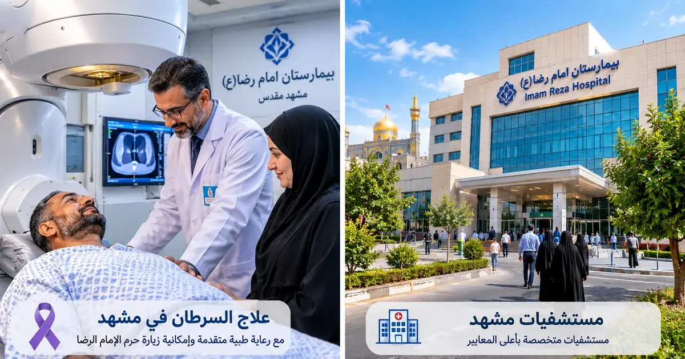

تجميل الأنف · قرار طبي وتخطيط السفر
تجميل الأنف في مشهد: ما الذي يجب التحقق منه قبل العملية؟

تجميل الأنف إجراء جراحي لا ينبغي اختياره بناءً على الصور أو السعر أو شهرة حساب على وسائل التواصل. قبل السفر، احصل على تقييم من جراح مؤهل، وافهم ما يمكن تغييره وما لا يمكن، وما المخاطر والبدائل، وكيف ستتم متابعة التنفس والتعافي بعد العملية.
المعاينة ووظيفة التنفس
يحتاج الجراح إلى فحص الأنف وتقييم الحاجز والممرات التنفسية والتاريخ الصحي والعمليات السابقة. إذا كان لديك انسداد أو صعوبة في التنفس، فاذكر ذلك بوضوح ولا تجعل الشكل الخارجي وحده محور الاستشارة. قد يطلب الطبيب فحوصاً أو تصويراً إضافياً بحسب الحالة.
كيف تتحقق من الجراح والمنشأة؟
- اطلب الاسم الكامل ورقم العضوية والتخصص الدقيق للجراح.
- تحقق من بياناته عبر سجل أعضاء منظمة النظام الطبي الإيرانية.
- تأكد من أن العملية ستجرى في منشأة مرخصة ومجهزة للتخدير والمراقبة.
- اسأل من سيكون مسؤولاً عن التخدير والرعاية بعد العملية.
- اطلب شرحاً للمخاطر والبدائل وإمكانية الحاجة إلى مراجعة أو إجراء تصحيحي.
الصور والنتائج المتوقعة
قد يطلب الجراح صوراً معيارية للأنف والوجه، لكن الصور لا تكفي لتحديد الخطة. اطلب رؤية أمثلة لحالات مشابهة، واسأل إن كانت الصور غير معدلة وما إذا كانت النتيجة المعروضة تمثل حالة أولية أم عملية مراجعة. لا يمكن ضمان شكل نهائي مطابق لصورة مرجعية.
التخدير والمتابعة
اسأل عن الفحوص المطلوبة قبل التخدير، والأدوية التي يجب مناقشتها مع الطبيب، وموعد المراجعات وإزالة الجبيرة أو الغرز إن وجدت. لا توقف دواءً أو تغير جرعته من تلقاء نفسك. تأكد من وجود وسيلة تواصل مع الفريق الطبي بعد مغادرة المستشفى.
الإقامة والعودة بالطائرة
تختلف مدة البقاء بحسب العملية وحالة المريض وخطة المتابعة. لا تعتمد على مدة ثابتة مثل أسبوع أو عشرة أيام. اطلب من الجراح تحديد موعد المراجعة الحضورية ومتى يسمح بالسفر، واحجز إقامة وتذكرة قابلة للتعديل قدر الإمكان. وجود مرافق قد يكون مهماً بعد التخدير العام؛ اسأل المركز عن متطلباته.
التكلفة الطبية ومصاريف الرحلة
اطلب عرضاً مكتوباً من المنشأة يوضح أتعاب الجراح والتخدير والمستشفى والفحوص والمتابعة، وما إذا كانت هناك رسوم إضافية. احسب الفندق والنقل والتذكرة بشكل منفصل، ولا تحول المال إلى وسيط قبل معرفة اسم المنشأة والجهة التي تصدر الفاتورة.
إذا كنت قادماً من خارج إيران، تحقق من ترخيص استقبال المرضى الدوليين عبر قائمة وزارة الصحة. وللتجهيز، راجع وثائق السفر الطبي ودليل السياحة العلاجية.
أسئلة شائعة
هل يمكن ضمان شكل الأنف من الصور؟
لا. الصور تساعد في النقاش فقط، والنتيجة تعتمد على التشريح والشفاء وتقييم الجراح.
هل تكفي استشارة عن بُعد قبل العملية؟
قد تكون خطوة أولية، لكنها لا تستبدل الفحص المباشر وتقييم التخدير والمخاطر.
متى يمكن العودة بالطائرة؟
يحدد الجراح ذلك وفق الإجراء والتعافي والفحص؛ لا تعتمد على مدة عامة أو وعد من وسيط.
إذا كنت تحتاج إلى ترتيب الإقامة أو النقل، أرسل التفاصيل اللوجستية بعد تأكيد الجهة الطبية. تواصل مع حسين عبر واتساب